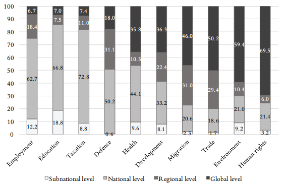
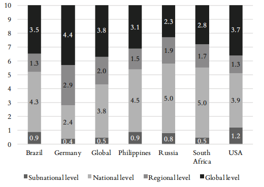
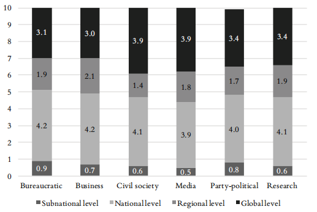
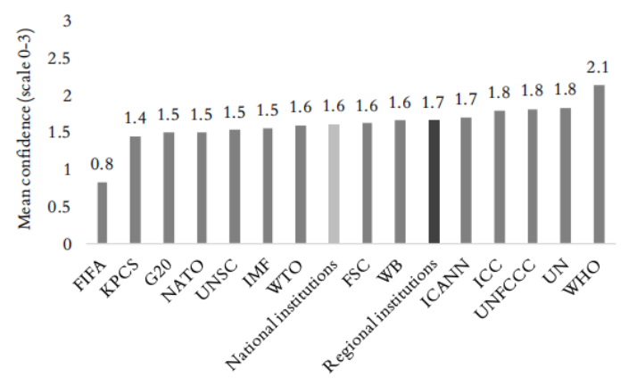
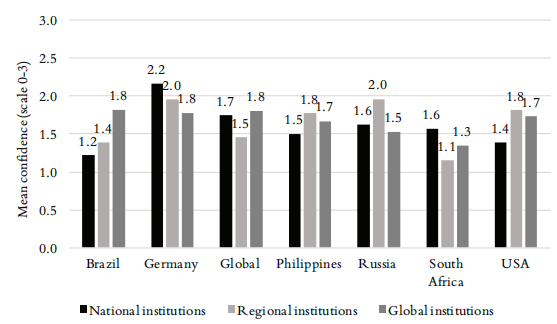
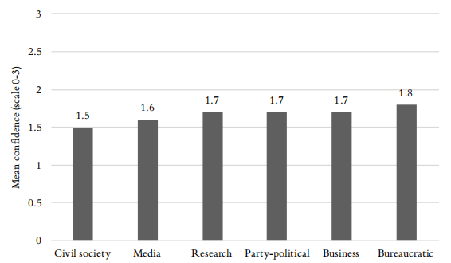
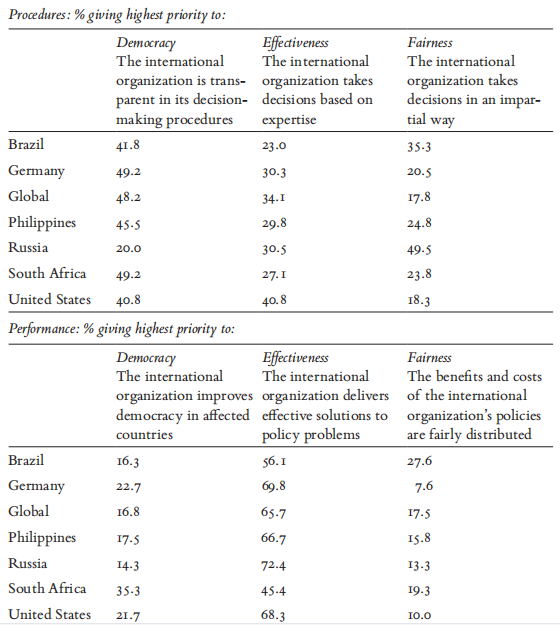
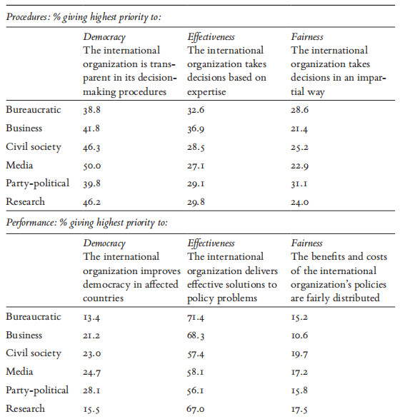
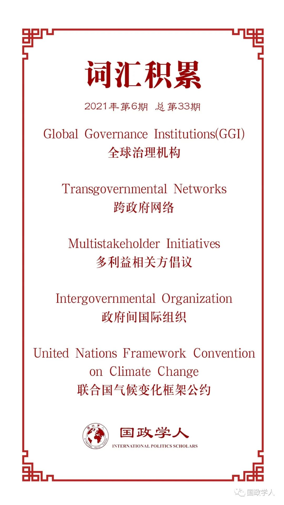

收录于合集

作品简介
【作者】 Jan Aart Scholte，莱顿大学教授，研究兴趣包括全球化和社会变革、多中心治理、全球治理的合法性、全球民主、全球政治的公民社会以及互联网治理。Soetkin Verhaegen，马斯特里赫特大学助理教授，研究兴趣主要为对地区和国际政府及机构的态度。Jonas Tallberg，斯德哥尔摩大学教授，研究兴趣主要为全球治理与欧洲政治。
【编译】 池佳曈（国政学人编译员，吉林大学行政学院）
【校对】 尤力、孟晓宇
【审核】 晋玉
【排版】 余姣
【美编 】臧泽华
【来源】 Jan Aart Scholte, Soetkin Verhaegen, Jonas Tallberg, Elite attitudes and the future of global governance, International Affairs , 2021, 97（3）, 861–886.
【归档】 《国际关系前沿》2021年第6期，总第33期。
期刊简介
《国际事务》（ International Affairs ）是国际关系领域的一流学术期刊，也是多学科综合性学术期刊。本刊于1992年由伦敦皇家国际事务研究所查塔姆学院(Chatham House)创立，内容来源广泛，力图囊括业内专家、学术新秀对重点、热点问题的最新思考。2019年期刊影响因子为3.705，在95个国际关系类刊物中位列第4名。
精英的态度与全球治理的未来
Elite attitudes and the future of global governance
Jan Aart Scholte
Soetkin Verhaegen
Jonas Tallberg
内容提要
本文评估 当今精英对于全球治理的态度与其态度将如何影响国际制度的未来 。文章以2017-2019年在巴西、德国、菲律宾、俄罗斯、南非、美国六个国家的商业、社会、媒体、政党、研究、政府官僚六个领域以及一个全方位的调查数据为基础并综合考虑国家间差异，得出三个结论：第一， 大体上政治与社会领域的领导者均对全球治理表现出较强意愿 ，并未陷入民族主义、保护主义与主权主义的情绪。第二， 实践层面上这些精英通常对于现存的四十个全球机构持中等程度的信心 ，在他们眼中目前全球治理不存在合法性危机。第三，在 价值取向方面，精英通常在全球治理的过程中强调民主 。为提升精英对于全球治理的信心，国际机构应在其运作过程中更加透明、更有效地处理问题。
文章导读
01
引言
当代社会面临传染病、生态变化、经济危机等一系列需要全世界共同采取措施的问题，然而经济民族主义的兴起与民粹主义对全球主义的拒斥均对全球治理造成了冲击。在关键组织处于领导地位者的精英通常在政治上有影响力，并在议程设置、知识生产、机构建立、决策进行与政策结果评估方面发挥重要作用。精英的支持对于制度的繁荣发展必不可少，对于精英态度的了解为比较公众观点、从大体上评估精英与民众对全球治理的看法奠定基础。然而，既有研究在实证方面存在很大不足，未能将多个国家、多种社会领域和多个全球治理机构(global governance institutions)的数据囊括在内。为弥补这一缺陷，文章对来自六个国家（巴西、德国、菲律宾、俄罗斯、南非、美国）的领袖以及一个跨国精英组织展开研究，每个地区的子样本涵盖商业、社会、媒体、政党、研究、政府官僚六个领域，调查对象分享其对于14个面向不同政策领域的全球治理机构的观点。
文章通过三个维度分析当代精英对未来全球治理的态度。第一，原则层面上精英们大体上均对全球治理表现出较强意愿。第二，实践层面上精英通常对于现存的全球机构持中等程度的信心。第三，具体措施层面上国际组织过程的民主化程度与运作效率与精英对于全球治理的态度成正比。
02
分析框架
文章采取描述与说明的方式，在考虑不同制度、国家与领域的前提下详细探究精英对于全球治理态度的水平和模式，并首先明确精英、全球治理与态度的定义。
1.精英
本文研究政治与社会精英的态度，前者通常在政府的决策进行过程中担任正式职务，包括管理治理机构的高级官员和决定政府政策制定和实施的政治家；后者在政府机构之外占据领导地位，主要参与政策审议过程，包括学者、民间社会组织者、商业高管、媒体评论员等。此外，文章同样将国家内部和全球范围内的领导者纳入研究范围。国内领导者在一国范围内影响较大，全球精英通过跨国网络发挥其影响力。
2.全球治理
全球治理机构最初以政府间国际组织的形式出现，最近则出现了跨政府网络(transgovernmental networks)、私人机制(private mechanisms)与多利益相关方倡议(multistakeholder initiatives)等新形式。尽管人们对于全球治理的了解往往限于政府间国际组织，跨国合作的未来却很大程度上取决于这些较新的制度设计。在这一背景下，文章主要评估精英对于包括北约、联合国、国际货币基金组织等知名度较高的政府间国际组织的态度，以及对一些包括G20、国际足球联盟等涵盖不同领域的全球治理机构的看法。
3.态度
文章假设，精英们看待全球治理的方式决定了他们在这一领域的行动，也将决定与全球问题有关的政策和机构的未来走向。文章特别强调三种态度：第一，政治与社会领导者原则上是否准备好在全球层面进行政策制定，对于地区与国家层面进行决策的偏好将使得全球治理边缘化。第二，领导者对于现存全球治理机制的合法性持何种态度，即精英如何评估全球治理机制。第三，精英对于全球治理机制质量的相对偏好，包括民主、效率与公平三个维度。
03
研究设计
文章在2017年10月至2019年8月针对六个领域与七个地区的860名精英，采取深度访谈、公开声明文本分析的方式进行调查，样本的广泛性便于寻找共同点、确保解释力。调查通过配额抽样的方式选择访谈对象，在每个国家和全球领域至少进行100次。每一组中一半是政治精英（官僚机构和政党至少25人），另一半是社会精英（商业、公民社会、媒体和研究至少12-13人）。这项调查从“信心”的角度审视了合法性，因为它挖掘了其对执政权力的更深层的信仰。由于调查对象中的大多数具有较高知名度，访谈在匿名条件下进行。
04
研究结果
文章为评估全球治理中的精英因素提供了系统描述：当前的精英群体绝不会反对全球治理的理念，他们的态度既没有经历危机也并未信心高涨，但可能会对全球治理机构的民主投入和有效产出的结果作出较大反应。
1.精英对于全球治理原则相当认可
文章认为与现存的某些政治家反全球化主义立场不同，在某些政策领域精英赞同全球治理理念并认为全球层面是一个合适的决策场所。虽然不同国家和领域的数据有所不同，但总体数据证明了精英对全球治理的支持。

图1 精英阶层在不同领域的四种治理层次的偏好
文章将精英认为适合处理的十大政策领域划分为次国家层面、国家层面、区域层面与全球层面。如图1所示超过一半的调查对象认为人权、环境、贸易领域应在全球层面进行治理，多数调查对象认为在移民和发展方面全球层面也处于优先级。相比之下，在税收、教育和就业领域精英主张在国家层面进行治理。
将地理位置作为划分依据时，全球层面治理的偏好如图2所示出现较大差别。德国受访者认为全球层面最适合决策的领域数量最多（10个问题领域中的4.4个），超过全球样本平均水平（3.8个）。菲律宾、南非、俄罗斯的精英们对全球治理呈保守态度。巴西与美国介于二者之间，与全球样本平均水平所差无几。一般来说，地缘政治位置更优越国家（德国、美国、巴西）的精英们比地缘政治优势不足者（菲律宾、俄罗斯、南非）更倾向于全球层面的治理。事实上，对全球和区域层面的偏好进一步强调了精英们在所有地理背景下对考虑超越国家治理的意愿。
 图2 精英对全球治理偏好的地域差异：政策领域的平均数量
然而不同领域的精英对于全球治理的偏好差异不大，如图3所示公民社会与媒体领域的精英对于全球治理表现出最强的偏好，政府官僚领域和商业领域则最弱，六个领域中除政府官僚领域的精英均更偏好全球治理而非国内治理。
 图3 各领域精英对于全球层次治理的偏好：政策领域的平均数
总之，研究样本体现了精英对全球治理的偏好，总体上这些政治与社会领导人已经做好了在全球层次进行重要政策制定的准备。一些特定的样本组（如菲律宾、政治官僚）对全球治理的偏好程度明显不如其他样本组（如德国、公民社会）。调查面对的所有精英大体上对全球治理持积极接受的态度。
2.精英在实践中赋予当前 全球 治理
中等水平的合法性
精英对现有全球治理机构的评估一般处于中等水平，合法性信心不高不低。研究者将受访者对于全球治理机构的信心水平分为四个等级，分别是“完全没有信心”（0）、“不太有信心”（1）、“较有信心”（2）和“非常有信心”（3）。总体平均水平大多集中在量表的中间，然而，当我们审视特定国家和特定精英阶层对特定全球治理机构的看法时，会出现较大的差异。
如图4所示，总的来说，对于14个全球治理机构，精英的合法性看法既不高也不低。与全球治理机构的接触会增强精英的信心，对其更具信心者将进一步与之互动，具体经验对于精英的影响强于一般知识。按问题领域分析，精英对可持续发展领域的三个政府间国际组织世界银行（WB）、联合国气候变化框架公约（UNFCCC）、世卫组织平均得分为1.9分，接近“较有信心”的指标。相比之下，在安全领域（国际商会ICC、北约NATO、联合国安理会UNSC）和经济领域（G20、国际货币基金组织IMF、世界贸易组织WTO）的平均得分为1.6和1.5。这些差异与此前文章得出的结论一致，即环境、发展和健康是精英优先考虑全球规模治理的政策领域，在国防、税收、就业方面则全球治理意愿较低。
 图4 精英对不同全球治理机构的信心
图5表明了精英对于全球治理机构合法性信仰的地理差异。以国家为分类标准，巴西（1.8）和美国（1.7）的精英们对全球治理而不是对国家治理更有信心，南非和德国则截然相反。在普遍的合法性观念之中，没有证据表明一个国家的精英阶层坚决拥护全球治理机构。

图5 不同地区精英对于国家、地区与全球治理机构的信心
从不同国家比较到不同领域的比较，图6在总体水平上几乎没有变化：六种精英类型的平均信任得分再次处于中等范围。六个领域精英的总体态度表明，没有一个精英群体准备对当前的全球治理机构进行大力抵制或推广。一般来说，精英类型之间的差异要比国家之间的差异要小得多。

图6 不同领域精英对全球治理机构的信心
总之，精英对现有全球治理机构的总体信心既未高到推动全球治理的大力扩张，也未低至阻碍甚至解散这些机构。值得注意的是，不同国家与行业的精英对个别全球治理机构的合法性信心存在或多或少的差异，未来这些差异可能会在不同的领域引发矛盾。总的来说，这项精英调查的证据表明，全球治理的未来既非危机也非繁荣，而是一个混乱的过程。与此同时，精英大体上对全球治理机构的中等水平信心可以在未来构建更高层次的全球治理。
3.提高透明度与问题解决能力 能够
增强精英对于全球治理的信心
与其他因素相比，精英更关注全球治理机构在程序和具体表现上是否民主、有效、公平。文章指出，程序的透明度的变化与具体表现方面问题解决能力的变化将对精英的合法性信心产生最大影响。文章通过调查受访者的优先事项得出这一结论，在程序层次要求受访者将透明度（民主的核心方面）、专业知识（有效性的核心方面）和公正（公平的核心方面）进行排序，并对全球治理绩效方面的优先事项进行排序，包括改善受影响国家的民主、提供有效解决方案实现成本和效益的公平分配。
如表1所示，在制度程序方面，精英总体上对透明度的要求更高，其次是专业知识与公正性，因此精英判断全球治理机制的主要标准首先是民主，其次是有效性与公平。在具体表现方面，有效性作为精英评估全球治理机构结果的指标超越民主和公平。与处于地缘政治有利位置的精英们相比，处于地缘政治边缘位置的精英们相对不太关心全球治理机构政治安排中的公平性。
表1 不同地理区域优先考虑的机构特征

如表2所示，除了政党政治类别的精英中稍大的比例认为公正优先于专业知识外，其他类别的精英都将“公平”排在最末位。也就是说，透明度优于专业知识的程度在不同领域间存在差异：在研究、民间社会和媒体团体差距较大，而在官僚机构、商业和政党方面差距较小。一般来说，各领域关于全球治理程序的相对优先事项的差异比国家之间小。关于全球治理绩效的标准，所有六个领域中绝大多数受访者都将解决问题置于最优先地位。然而，这一秩序在官僚机构和研究部门中发生了逆转。从某种程度上说，商界精英对公平分配的重视程度最低，这或许是自由市场的力量的体现。
表2 不同领域优先考虑的机构特征

总之，精英们对全球治理机构运营透明度的提高和全球治理政策结果中问题解决能力的提高作出了最积极的反应。不同地理范围和领域的差异表明，变革的举措将引起不同精英受众的不同反应，政策从业者不应寄希望于一揽子解决方案。此外，精英在这些问题上的态度可能与公民的优先取向不符，只关注精英的偏好可能会加剧民众对全球治理的不安。
05
结论
总之，文章指出精英并不认为全球治理处于危机之中。精英总体上准备好接受全球层面的决策，但同时对于全球治理机构态度犹豫，普遍持中等程度的信心，处于坚信与怀疑之间。文章认为，精英们会对提高政府透明度和问题解决能力的改革做出特别积极的反应。由于精英们有重大的政治影响，全球治理的未来可能在很大程度上取决于全球治理机构向这些方向发展。
文章认为在决策的偏好层次、对现有全球治理机制的评估和机制的优先取向方面，随着地理位置、精英类型与不同国际机制等因素的改变，结果有显著不同。精英间立场不尽相同，全球治理的改革并不能使精英采取一致行动。现有成果将为未来关于精英与大众对全球治理态度的关系的研究打下基础，文章展现了当下的精英对于世界范围内的规则和机制的准确态度，能够大体上对公民的态度进行预估。
该研究成果与当今政治和社会领导人会像20世纪30年代那样反对全球治理观点的观点相矛盾。文章关于精英对现有全球治理指标的信心的证据并未表明近期全球规模治理在短期内有所下降。相反，如果全球治理机构能够在其程序和绩效等方面进行改善，精英整体将会加大对全球治理的支持力度。
译者评述
文章评估当今精英对于全球治理的态度与其态度将如何影响国际制度的未来，从2017年10月至2019年8月针对六个领域与七个地区的860名精英，采取深度访谈、公开声明的文本分析等方式进行调查。近年来，全球治理似乎正在经历困境，新冠疫情的爆发更加剧了这种无序状态，但文章却得出了相反的结论：第一，大体上政治与社会领域的领导者均对全球治理表现出较强意愿，并未陷入民族主义、保护主义与主权主义的情绪。第二，实践层面上这些精英通常对于现存的四十个全球机构持中等程度的信心，在他们眼中目前全球治理不存在合法性危机。第三，在价值取向方面，精英通常在全球治理的过程中强调民主。
从研究内容方面看，不同于以往以单一国家为单位进行的全球治理研究，本文聚焦“精英”这一特定群体关于全球治理的态度。精英作为关键组织的领导者，通常在议程设置、知识生产、机构建立、决策进行与政策结果评估方面发挥重要作用。对于全球治理的繁荣发展来说，精英的支持必不可少，对于精英态度的了解也为评估民众对的看法奠定基础。从研究方法来看，既有研究在实证方面存在很大不足，未能将多个国家、多种社会领域和多个全球治理机构囊括在内，本文则克服了这一缺陷，研究的广度和深度都相当可观。但文章选取的样本并未将中国等意识形态不同的国家涵盖在内，因此研究范围有其局限，更深层次的研究空间依然存在。
词汇整理

文章观点不代表本平台观点，本平台评译分享的文章均出于专业学习之用, 不以任何盈利为目的，内容主要呈现对原文的介绍，原文内容请通过各高校购买的数据库自行下载。
好好学习，天天“在看”
国政学人
支持学术公益与知识传播
微信扫一扫赞赏作者 __赞赏
已喜欢，对作者说句悄悄话
取消 __
发送给作者
发送
最多40字，当前共字
上一页 1/3 下一页
长按二维码向我转账
支持学术公益与知识传播
受苹果公司新规定影响，微信 iOS 版的赞赏功能被关闭，可通过二维码转账支持公众号。